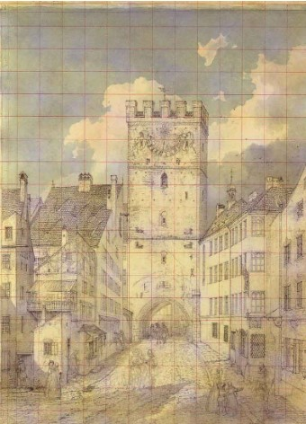
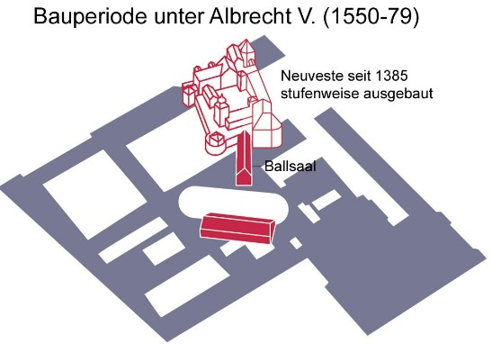
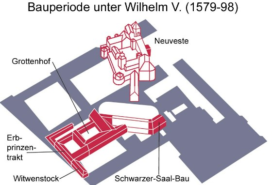
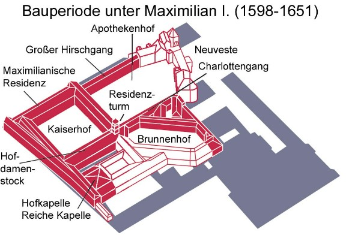

Stationen der Stadtführung
Einführung
Im Folgenden werden die Station des Stadtführers "Altstadt München - ein zentraler städtischer Teilraum" genauer erläutert und verortet.
Weiterer Einführungstext HIER.
Station 1: Das Ruffini Haus
Die erste Station des Rundgangs wird das Ruffini Haus sein. Dabei steht vor allem das Gemälde an der Ostseite (Rindermarkt 10, Ecke Pettenbeckstraße) des Hauses im Vordergrund.
Das Wandgemälde von Karl Wahler weist auf die historische Situation hin. Am heutigen Standort des Ruffinihauses stand von 1175 bis 1806 nämlich das innere Sendlinger Tor. An dieser Station soll auf die Gründung der Stadt sowie die erste Stadtbefestigung genauer eingegangen werden.

...
Station 2: Das Stadttor (Die erste Stadterweiterung)
Live-Webcam-Foto of Muenchen:

...
Station 3: Die Residenz (Königliches München)
Die dritte Station thematisiert mit der Residenz das königliche München.
Die Münchner Residenz war von 1508 bis 1918 Wohn- und Regierungssitz der bayerischen Herzöge, Kurfürsten und Könige. Aus der gotischen Wasserburg „Neuveste“ aus dem Jahr 1385, die früher im Nordosten der Stadt lag, bauten verschiedene Fürsten die Burg zu einem prunkvollen Wohn- und Regierungssitz mit mehreren Höfen und Gärten aus.
Dabei bildet die Neuveste den Kern der heutigen Residenz. Bis ins 16. Jahrhundert erfolgte ein stufenweiser Ausbau der Neuveste. Unter Herzog Albrecht V. (1550-1579) wurde das Antiquarium nach den Entwürfen von Jacopo Stada und Simon Zwitzel errichtet. Das Antiquarium diente als Ausstellungsort für die herzogliche Sammlung antiker Skulpturen. Außerdem wurde der Ballsaal, von dem heute nur mehr die Kellergewölbe erhalten sind, erbaut.

Herzog Wilhelm V. (reg. 1579-1597) wurde das Antiquarium weiter ausgebaut. Daran anschließend liest er einen Sommerpalast um einen Gartenhof errichten. Dieser Binnenhof erhielt den Namen Grottenhof. Außerdem kam noch der Schwarzer-Saal-Bau sowie der Erbprinzentrakt und Witwenstock hinzu.


...
Station 4: Der Kögelmühlbach
Der Kögelmühlbach
Infos und Bilder
...
Station 5: Die Frauenkirche
Infos und Bilder
...
Station 6: Der Marienplatz
Info und Bilder ...
Station 7: Der Bau der zweiten Stammstrecke
Infos und Bilder
...